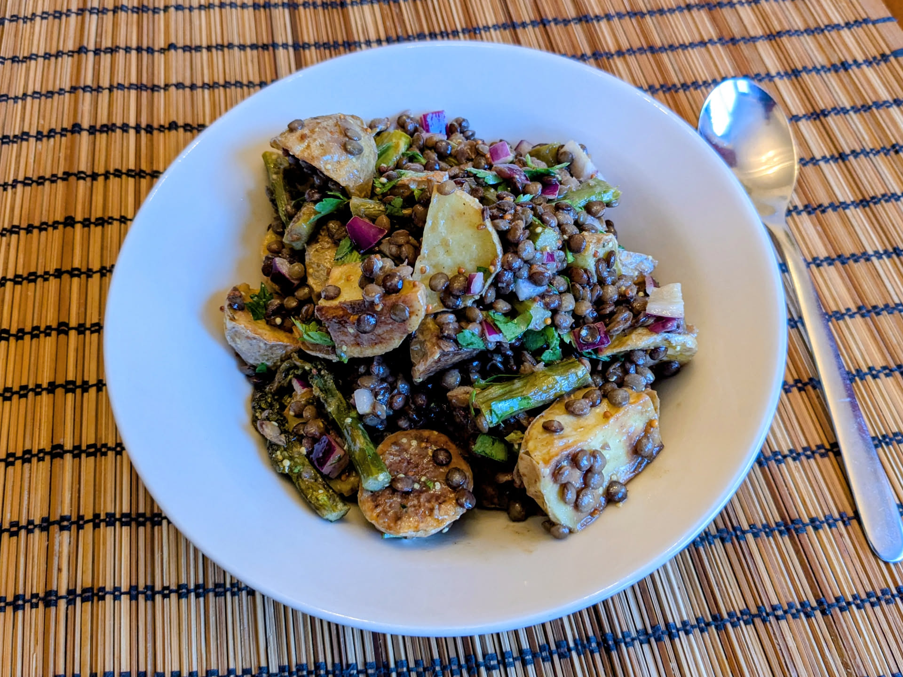

Salade de patates, asperges, et lentilles

Pour 5-6 personnes en entrée, 3 en plat principal :
- 500g de patates à chair ferme
- 500g d'asperges vertes
- 150g de lentilles vertes
- Un oignon rouge
- Un demi-citron
- Un petit bouquet de persil
- Une cuillère à soupe de moutarde
- Une cuillère à soupe de moutarde à l'ancienne
- Trois cuillères à soupe de bonne huile d'olive
- Une demi-cuillère à soupe de sirop d'érable ou de miel
- Sel, poivre, huile d'olive (de cuisson)
- Faire chauffer le four à 220°C. Couper les patates en assez gros morceaux, saler, poivrer, disposer sur une plaque de four avec de l'huile d'olive, et les rôtir environ 30 minutes, en les tournant à mi-parcours, jusqu'à ce qu'elles soient bien dorées et délicieuses.
- Pendant ce temps, rincer les lentilles et les mettre dans une casserole avec (au moins) un demi-litre d'eau. Les faire cuire à feu moyen à partir des premiers bouillons jusqu'à ce qu'elles cessent d'être croquantes, environ 20 minutes.
- Pendant ce temps, enlever le bout dur des asperges, et les disposer sur une plus petite plaque de four avec de l'huile d'olive, du sel et du poivre, et les faire rôtir jusqu'à ce qu'elles soient dorées et qu'un couteau planté dedans ne rencontre pas trop de résistance.
- Pendant ce temps, couper l'oignon rouge en morceaux pas trop gros. Mélanger les moutardes, la bonne huile d'olive, le sirop d'érable, le jus du citron, du sel et du poivre. Laver, sécher, puis ciseler le persil.
- Lorsque les légumes rôtis sont cuits, les enlever du four; lorsque les lentilles sont cuites, les égoutter. Laisser le tout tiédir quelques minutes, puis tout mélanger. Servir tiède ou refroidi.